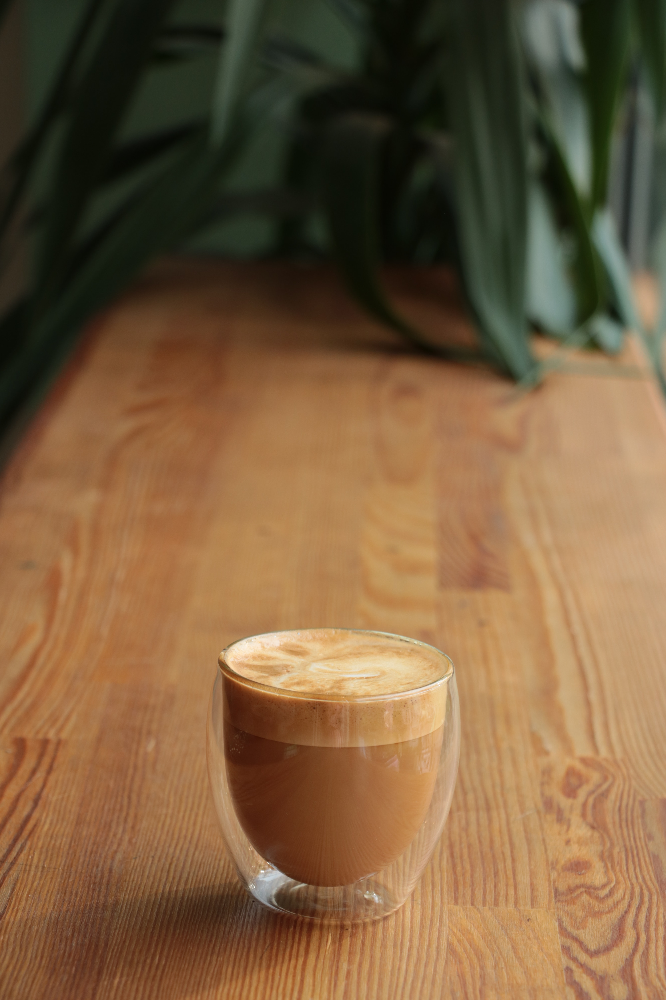

A cappuccino (/ˌkæpʊˈtʃiːnoʊ/ (listen); Italian pronunciation: [kapputˈtʃiːno]; Italian plural: cappuccini) is an espresso-based coffee drink that originated in Austria with later development taking place in Italy, and is prepared with steamed milk foam (microfoam).
